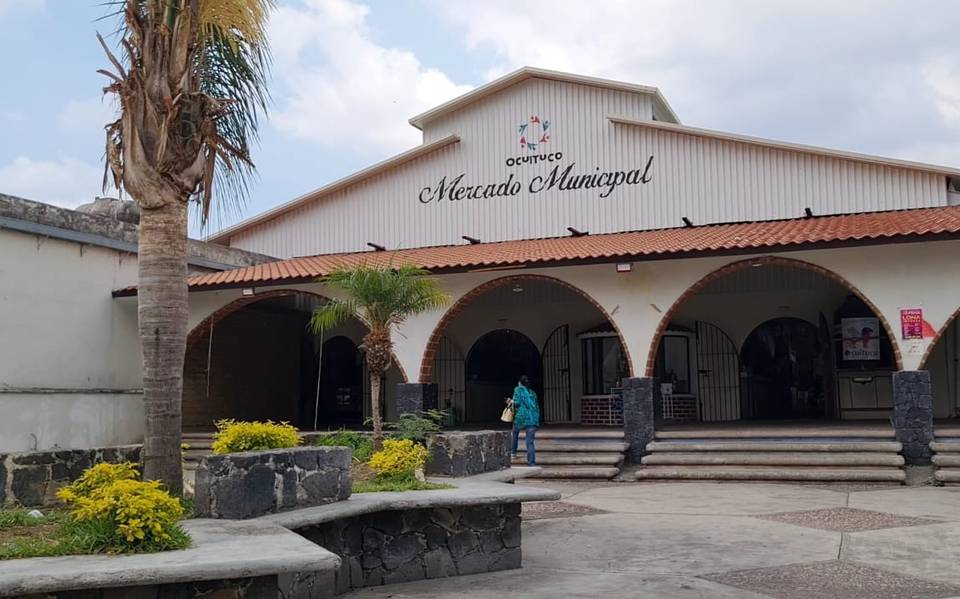
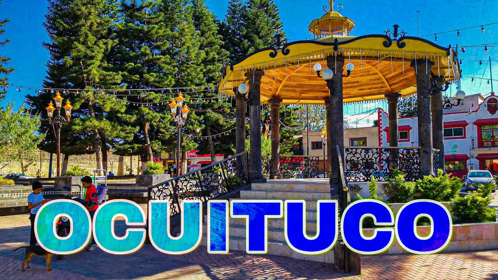

Sábados: 7:00 a.m. - 6:00 p.m.
Domingos: 7:00 a.m. - 6:00 p.m. 
¿Dónde nos encontramos?
"Nos encontramos enfrente del mercado de Ocuituco Morelos, un pintoresco municipio ubicado en el estado de Morelos, México. Rodeado de exuberante vegetación y paisajes montañosos, este encantador rincón ofrece un escape perfecto de la agitada vida urbana.
Ocuituco, cuyo nombre en náhuatl significa 'lugar de cuevas', es un tesoro cultural y natural. Sus calles empedradas y su arquitectura colonial nos transportan a épocas pasadas, mientras que sus iglesias y capillas históricas, como la Parroquia de San Juan Bautista, atestiguan la rica herencia religiosa del lugar.
En resumen, Ocuituco es mucho más que un simple destino turístico; es un lugar donde el pasado y el presente se entrelazan para ofrecer una experiencia única e inolvidable. Desde su historia arraigada hasta su belleza natural, este pueblo encantador invita a los viajeros a descubrir la magia que lo hace único en cada rincón."